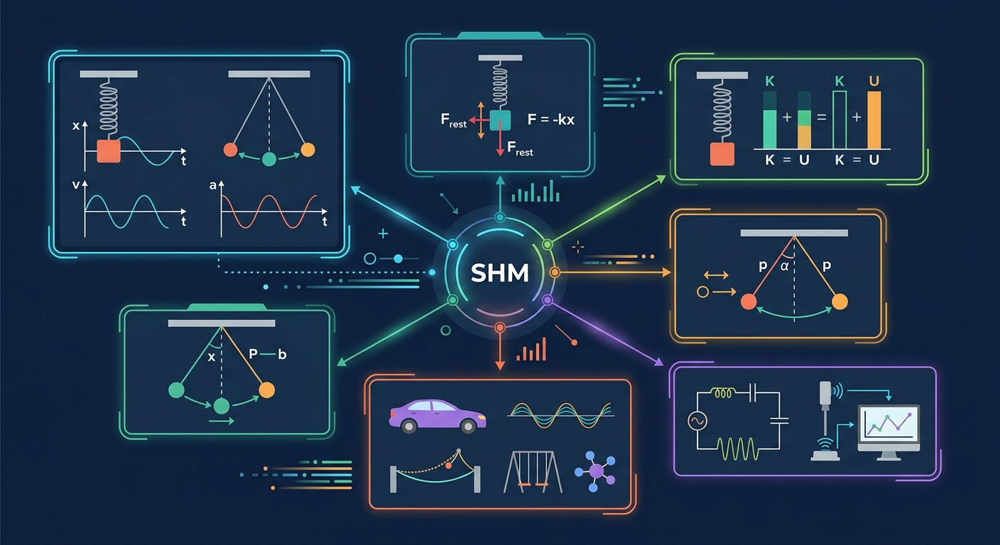

AP Physics 1 · CRASH COURSE
简谐运动 (Simple Harmonic Motion)
AP Physics 1 | 振动与转动 · Oscillation & Rotation | Grade 11

📍 知识图谱节点
1什么是简谐运动 (What is SHM?)
📖 定义
简谐运动 (Simple Harmonic Motion, SHM) 是最基本、最重要的振动形式。当物体偏离平衡位置时，所受的回复力与位移成正比，且方向指向平衡位置：
F = −kx
k: 劲度系数 (N/m) | x: 相对平衡位置的位移 (m)
⚡️ 这个"负号"至关重要——它表示回复力总是指向平衡位置，与位移方向相反。这正是简谐运动的本质特征！
SHM 之所以"简单"，是因为它的位移-时间关系可以精确地用正弦或余弦函数描述。这种规律性使它成为理解所有复杂振动的基础。
🔑 核心物理量
振幅 Amplitude (A)
最大位移
单位: m
周期 Period (T)
完成一次全振动的时间
单位: s
频率 Frequency (f)
每秒完成的振动次数
f = 1/T, 单位: Hz
角频率 Angular Freq. (ω)
ω = 2πf = 2π/T
单位: rad/s
相位 Phase (φ)
决定初始状态
单位: rad
劲度系数 k
弹簧"硬度"
单位: N/m
🔄 与匀速圆周运动的联系
简谐运动与匀速圆周运动有着深刻的联系。想象一个物体做匀速圆周运动，它的投影在一条直径上所做的运动，就是简谐运动！
💡 这个"参考圆" (Reference Circle) 方法是分析 SHM 的强大工具——它把抽象的正弦运动映射到具体的圆周运动，从而用几何方法推导 SHM 公式。
🔄 参考圆动画 — SHM 的几何本质
交互
ω = 15 rad/s
A = 1.0 m
位移 x(t) vs 时间
速度 v(t) vs 时间
2数学描述 (Mathematical Description)
📐 位移、速度、加速度公式
以余弦函数为例（正弦函数只是相位差 π/2）：
x(t) = A cos(ωt + φ)
位移 — 时间关系
v(t) = −Aω sin(ωt + φ)
速度 = 位移对时间的一阶导数
a(t) = −Aω² cos(ωt + φ) = −ω²x
加速度 = 位移对时间的二阶导数，注意：a ∝ −x 正是 SHM 的定义！
⚠️ 重要规律：速度最大值 v_max = Aω（在平衡位置，x=0）
加速度最大值 a_max = Aω²（在最大位移处，x=±A）
加速度最大值 a_max = Aω²（在最大位移处，x=±A）
📈 SHM 三量同步图 — 位移/速度/加速度
交互
A = 0.5 m
ω = 8.0 rad/s
φ = 0.0 rad (0°)
🔴 红色=x(t) 🔵 蓝色=v(t) 🟢 绿色=a(t)
📊 三大关键结论
| 结论 | 表达式 | 说明 |
|---|---|---|
| 回复力与位移正比反向 | F = −kx 或 a = −ω²x | 这是 SHM 的判定条件 |
| 速度与位移相位差 π/2 | x 最小时 v 最大 | 能量转换的体现 |
| 加速度与位移反相 | a = −ω²x | 相位差 π，加速度总指向平衡位置 |
| 周期与振幅无关！ | T = 2π√(m/k) 或 2π√(L/g) | 等时性的体现，伽利略的发现 |
3能量 (Energy in SHM)
⚡ 动能、势能与机械能
在理想SHM中（无摩擦、无阻力），机械能守恒！
KE = ½mv² = ½mA²ω²sin²(ωt+φ)
动能 — 随时间周期性变化
PE = ½kx² = ½kA²cos²(ωt+φ)
弹性势能 — 也随时间周期性变化
E_total = ½kA² = ½mA²ω² = 常数！
机械能守恒 — SHM 最重要的能量特征
💡 能量视角的威力：无论运动到哪个位置，总有 E = KE + PE = ½kA²。利用这一点可以直接求任意位置的速度：
v = ±√[(k/m)(A²−x²)] = ±ω√(A²−x²)
v = ±√[(k/m)(A²−x²)] = ±ω√(A²−x²)
⚡ 能量转化动画 — KE 与 PE 的此消彼长
交互
k = 50 N/m
A = 0.6 m
🔴 KE (动能) 🔵 PE (势能) 🟡 E_total (总能量 = 常数)
4弹簧振子 (Spring-Mass System)
🔧 弹簧振子公式
弹簧振子是理想SHM的典型实例。胡克定律与惯性结合，产生简谐运动：
ω = √(k/m)
角频率 — 由系统固有性质决定
T = 2π√(m/k)
周期 — 注意：T 与振幅 A 无关！
f = 1/(2π) · √(k/m)
频率
⚠️ T = 2π√(m/k) 意味着：质量越大，周期越大（越慢）；弹簧越硬（k越大），周期越小（越快）。
这个"与振幅无关"的性质叫做等时性，是伽利略在比萨大教堂发现的！
这个"与振幅无关"的性质叫做等时性，是伽利略在比萨大教堂发现的！
🔧 弹簧振子互动模拟
交互
m = 5.0 kg
k = 40 N/m
A = 0.5 m
T = -- s
🔍 弹簧串并联
| 连接方式 | 等效劲度系数 | 周期变化 |
|---|---|---|
| 并联 | k_eq = k₁ + k₂ | 周期变小（变快） |
| 串联 | 1/k_eq = 1/k₁ + 1/k₂ | 周期变大（变慢） |
5单摆 (Simple Pendulum)
⏳ 单摆公式（小角度近似）
当摆角 θ 很小时（θ < 15°），单摆的运动近似为简谐运动：
T = 2π · √(L/g)
周期只与摆长 L 和重力加速度 g 有关，与振幅和质量无关！
ω = √(g/L)
角频率
⚠️ 前提条件：小角度近似
只有当 sin θ ≈ θ（θ 用弧度表示）时，单摆才近似做SHM。
当 θ = 15° 时，sin(15°) = 0.259，误差约 1.7% — 仍在可接受范围。
当 θ = 30° 时，误差约 9.7% — 已经相当显著！
只有当 sin θ ≈ θ（θ 用弧度表示）时，单摆才近似做SHM。
当 θ = 15° 时，sin(15°) = 0.259，误差约 1.7% — 仍在可接受范围。
当 θ = 30° 时，误差约 9.7% — 已经相当显著！
⏳ 单摆互动模拟
交互
L = 1.0 m
θ₀ = 20°
g = 9.8 m/s²
T = -- s
🔬 大角度单摆 — 非线性效应（拓展内容）
▼
当摆角较大时，单摆不再满足简谐运动条件，其运动方程变为：
d²θ/dt² = −(g/L)sinθ
精确方程（无法用初等函数解析求解）
大角度下单摆的运动出现以下有趣现象：
- 周期随振幅增大而增大（不再等时）
- 运动变为非线性，可能出现混沌
- 可用椭圆积分精确求周期：T = 4√(L/g) · K(sin(θ₀/2))
💡 这正是物理学的魅力——简单系统在大参数下会产生复杂行为！
6练习题 (Practice Problems)
🤖
AI 学伴 · Physics Coach
AP Physics 1 · SHM 专项辅导
你好！我是你的 AP Physics 1 辅导老师 🎯。简谐运动是 AP Physics 1 中最数学化的章节之一，涉及三角函数、图像分析和能量守恒的综合运用。
学习 SHM 的关键三问：
① 回复力满足 F = −kx 吗？（这是 SHM 的定义）
② 周期公式是什么？（弹簧：T=2π√(m/k)；单摆：T=2π√(L/g)）
③ 能量如何转换？（KE + PE = ½kA² = 常数）
记住：速度最大 ↔ 位移为零 ↔ 势能最小 ↔ 动能最大
学习 SHM 的关键三问：
① 回复力满足 F = −kx 吗？（这是 SHM 的定义）
② 周期公式是什么？（弹簧：T=2π√(m/k)；单摆：T=2π√(L/g)）
③ 能量如何转换？（KE + PE = ½kA² = 常数）
记住：速度最大 ↔ 位移为零 ↔ 势能最小 ↔ 动能最大
胡克定律
能量守恒
三角函数
图像分析
等时性
相位关系
📝 第1题：一个弹簧振子的质量 m = 2 kg，劲度系数 k = 200 N/m。它的周期 T 是多少？
📝 第2题：单摆的周期 T = 2π√(L/g)。若将摆长 L 加长为原来的 4 倍，周期如何变化？
📝 第3题：弹簧振子从平衡位置运动到最大位移处的过程中，以下说法正确的是？
📋 章节总结 — SHM 核心公式速记卡
弹簧振子
T = 2π√(m/k)
ω = √(k/m)
F = −kx
T = 2π√(m/k)
ω = √(k/m)
F = −kx
单摆（小角度）
T = 2π√(L/g)
ω = √(g/L)
a = −(g/L)x
T = 2π√(L/g)
ω = √(g/L)
a = −(g/L)x
位移-速度-加速度
x = A cos(ωt+φ)
v = −Aω sin(ωt+φ)
a = −ω²x
x = A cos(ωt+φ)
v = −Aω sin(ωt+φ)
a = −ω²x
能量守恒
E = ½kA²
v = ±ω√(A²−x²)
KE + PE = E（常数）
E = ½kA²
v = ±ω√(A²−x²)
KE + PE = E（常数）